Workshop
Building a JBoss BPM Travel Agency
Now we have created the last rules we needed, time to complete the Travel Agency BPM process which will leverage the rules and services. The process we will be completing in this lab is a sub-process called 'calculatepriceprocess' and is used by the main Travel Agency process to validate data, calculate discount pricing and to calculate the final pricing.
Lab 03 - Complete the Travel Agency BPM Process
Lab Goal
To complete the JBoss BPM Travel Agency pricing process using the process modeler and previously completed rules.
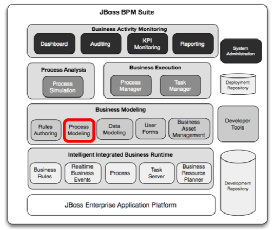
Complete the BPM process
- In project authoring open the Calculate Price Process:
AUTHORING -> PROJECT AUTHORING -> BUSINESS PROCESSES -> calculatepriceprocess- Note errors due to being incomplete, so let's fix that!
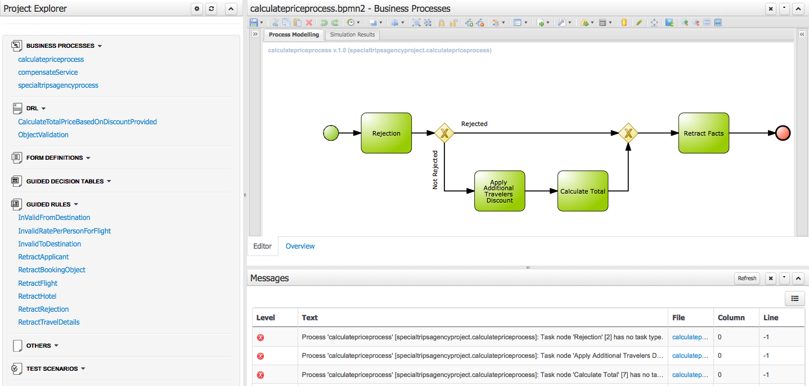
Complete the BPM process
- The process is a sub-process called by the main process
- Let's look at the data being passed into this process:
- click on the main process pallet (white background)
- slide out the
Propertiespane on the right - we see that the
Variable Definitionsare empty, so no data has been passed into this sub-process, why?
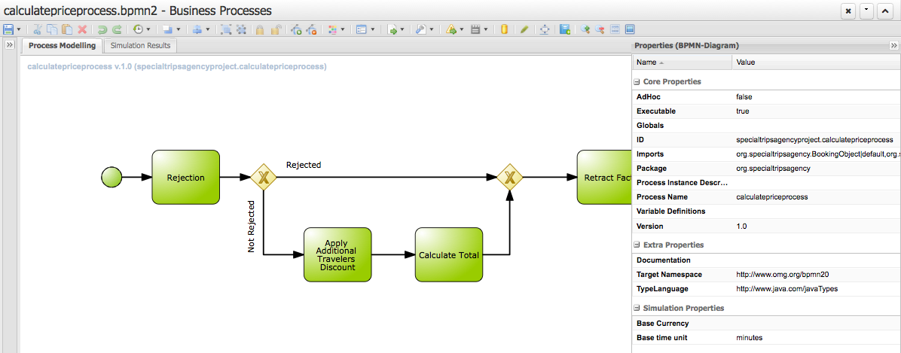
Complete the BPM process
- So where does our data for the rules (our facts) come from?
- How can we call rules without any facts, well in the main process we find the answer:
- the facts were put into memory (into a session) for us, in 'Prepare Data', before calling the sub-process
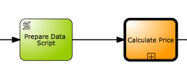
Complete the BPM process
- We can now work directly with our rules, starting with deciding if the data submitted is valid
- To do this we need to setup the
'Rejection'node: - click on
Rejectionto select - slide open
Propertiespanel on the right
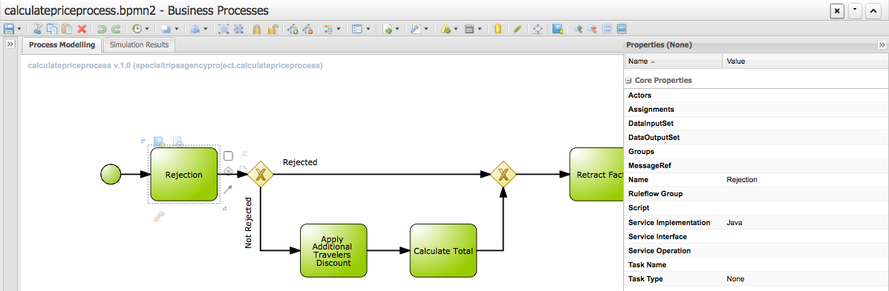
Complete the BPM process
- We need to set the following field:
Task Type: Business Rule- note the change to the node, a rule icon now identifies it
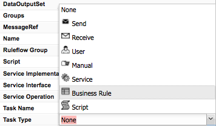
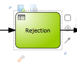
Complete the BPM process
- We need to set the following field:
Ruleflow Group: rejection- open the pop-up editor, view the rules in
'rejection', selectrejection, click onSave
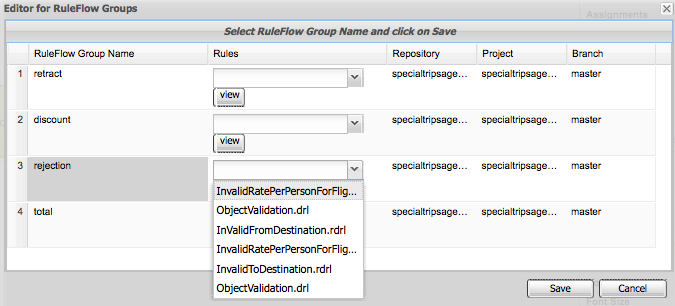
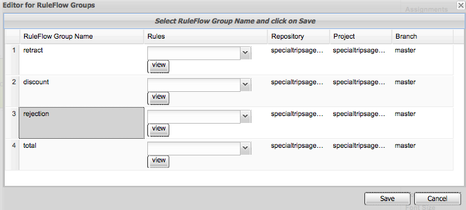
Complete the BPM process
- The validation rules are now used in
Rejection

Complete the BPM process
- In the following gateway node, the path
Rejectionchecks for a Rejection object in memory - This will be there if the validation rules detect data that fails our rules
- It's done for you in
Properies -> Expression: org.specialtripsagency.Rejection()
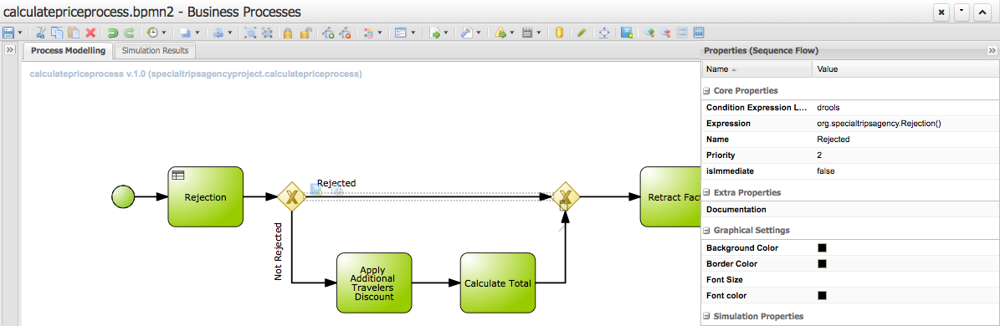
Complete the BPM process
- In the following gateway node, the
Not Rejectedpath verifies that there is not a Rejection object in our session - It's done for you in
Properies -> Expression: not org.specialtripsagency.Rejection()
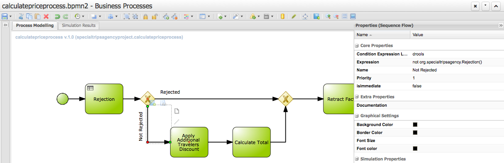
Building the Travel Agency
(next up, building JBoss Fuse microservices...)
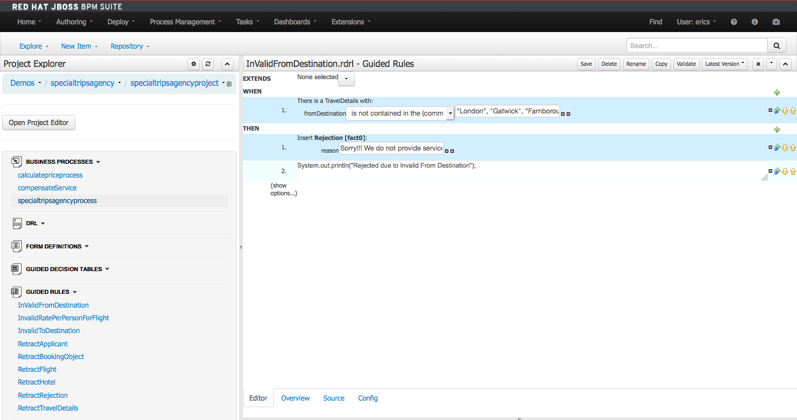
- Racing Camel with BPM and Red Hat JBoss Fuse